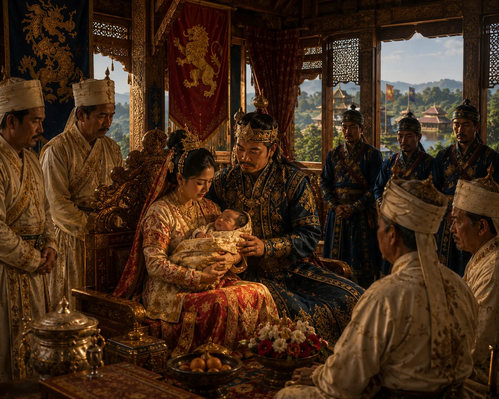

Birth of Prince Chao Pulai
c. 1310 · The coming of Sukaphaa

A reconstructed scene of the birth of Prince Chao Pulai, linking the Kamata and Ahom royal families.
The scene identifies Rajani as the mother while the person records identify Bhajani. The maternal identification and approximate date require verification.
Sources have not yet been catalogued for this record.
People: Chao Pulai, Rajani, Sukhaangphaa
Open this scene in the interactive archive · Follow this event on MAP